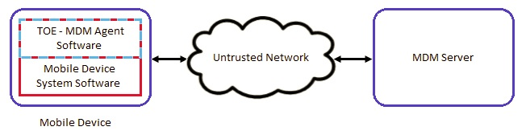

The scope of the MDM Agent PP-Module is to describe the security functionality of a Mobile Device Management (MDM) Agent in terms of [CC] and to define functional and assurance requirements for such products. This PP-Module is intended for use with the following Base-PPs:
Mobile Device Management (MDM) Protection Profile, Version 4.0
Mobile Device Fundamentals (MDF) Protection Profile, Version 3.1
These Base-PPs are valid because a MDM Agent is
either a 3rd party application manufactured by the MDM Server vendor or is a
native application deployed on a mobile device.
1.2 Terms
The following sections list Common Criteria and technology terms used in this document.
1.2.1 Common Criteria Terms
Base Protection Profile (Base-PP)
Protection Profile used to build a PP-Configuration.
Common Criteria (CC)
Common Criteria for Information Technology Security Evaluation
(International Standard ISO/IEC 15408).
Common Criteria Testing Laboratory
Within the context of the Common Criteria Evaluation and Validation Scheme
(CCEVS), an IT security evaluation facility, accredited by the National Voluntary
Laboratory Accreditation Program (NVLAP) and approved by the NIAP Validation Body to
conduct Common Criteria-based evaluations.
Common Evaluation Methodology (CEM)
Common Evaluation Methodology for Information Technology Security
Evaluation.
Protection Profile (PP)
An implementation-independent set of security requirements for a category
of products.
A comprehensive set of security requirements for a product type that consists of at least one Base-PP and at least one PP-Module.
Protection Profile Module (PP-Module)
An implementation-independent statement of security needs for a TOE type
complementary to one or more Base Protection Profiles.
Security Functional Requirement (SFR)
A requirement for security enforcement by the TOE.
Security Target (ST)
A set of implementation-dependent security requirements for a specific
product.
Target of Evaluation (TOE)
The security functionality of the product under evaluation.
TOE Security Functionality (TSF)
The security functionality of the product under evaluation.
TOE Summary Specification (TSS)
A description of how a TOE satisfies the SFRs in an ST.
1.2.2 Technical Terms
Administrator
The person who is responsible for management activities, including setting
the policy that is applied by the enterprise on the mobile device.
Enrolled State
The state in which a mobile device is managed by a policy from an
MDM.
Mobile Application Store (MAS)
Mobile Application Store
Mobile Device Management (MDM)
Mobile Device Management
Mobile Device User
The person who uses and is held responsible for a mobile
device.
Operating System
Software which runs at the highest privilege level and can directly control
hardware resources. Modern mobile devices typically have at least two primary
operating systems: one which runs on the cellular baseband processor and one which
runs on the application processor. The platform of the application processor handles
most user interaction and provides the execution environment for apps. The platform of
the cellular baseband processor handles communications with the cellular network and
may control other peripherals. The term OS, without context, may be assumed to refer
to the platform of the application
Unenrolled State
The state in which a mobile device is not managed by an MDM system.
User
See Mobile Device User.
1.3 Compliant Targets of Evaluation
The MDM system
consists of two primary components: the MDM Server software and the MDM Agent. This PP-Module specifically addresses the MDM Agent. The MDM Agent establishes a secure connection back
to the MDM Server, from which it receives policies to enforce on the mobile
device. Optionally, the MDM Agent interacts with the Mobile Application
Store (MAS) Server to download and install enterprise-hosted applications.
A
compliant MDM Agent is installed on a mobile device as an application
(supplied by the developer of the MDM Server software) or is part of the
mobile device's OS.This PP-Module builds on either the MDF PP or the MDM PP. A TOE
that claims conformance to this PP-Module must also claim conformance to one
of those PPs as its Base-PP. A compliant TOE is obligated
to implement the functionality required in the Base-PP along with the
additional functionality defined in this PP-Module in order to mitigate the
threats that are defined by this PP-Module.
This PP-Module shall build on the MDF PP if the TOE is a native part of a mobile operating system. The TOE for
this PP-Module combined with the MDF PP is the mobile
device itself plus the MDM Agent. If the MDM Agent is part
of the mobile device’s OS, the MDM Agent may present multiple interfaces for
configuring the mobile device, such as a local interface and a remote interface. Agents
conforming to this PP-Module must at least offer an interface with a trusted
channel that serves as one piece of an MDM system. Conformant MDM Agents may also offer other interfaces, and the configuration aspects of
these additional interfaces are in scope of this PP-Module.
This PP-Module shall build on the MDM Server PP if the TOE is a third-party application that is provided with
an MDM Server and installed on a mobile device by the user after acquiring
the mobile device. The distributed TOE for this PP-Module
combined with the MDM Server PP is the entire MDM environment, which includes both the MDM Server and the
MDM Agent. Even though the mobile device itself is not part of the TOE, it is expected to be evaluated against the MDF PP so that
its baseline security capabilities can be assumed to be present.
1.3.1 TOE Boundary
Figure 1 shows a high-level example of the PP-ModuleTOE boundary and its Operational Environment. As stated above, the MDM Agent may either be provided as part of the mobile device itself (shown in
red) or distributed as a third-party application from the developer of the MDM Server software (shown in blue).
Figure 1:
MDM Agent Operating Environment
The MDM
Agent must closely interact with or be part of the mobile device’s platform in order to
establish policies and to perform queries about device status. The mobile device, in turn,
has its own security requirements specified in the MDF PP.
[USE CASE 1] Enterprise-owned device for general-purpose enterprise use
An Enterprise-owned device for general-purpose business use is commonly
called Corporately Owned, Personally Enabled (COPE). This use case entails a significant
degree of Enterprise control over configuration and software inventory. Enterprise
administrators use an MDM product to establish policies on the mobile
devices prior to user issuance. Users may use Internet connectivity to browse the web or
access corporate mail or run Enterprise applications, but this connectivity may be under
significant control of the Enterprise. The user may also be expected to store data and
use applications for personal, non-enterprise use. The Enterprise administrator uses the
MDM product to deploy security policies and query mobile device
status. The MDM may issue commands for remediation actions.
[USE CASE 2] Enterprise-owned device for specialized, high-security use
An Enterprise-owned device with intentionally limited network connectivity,
tightly controlled configuration, and limited software inventory is appropriate for
specialized, high-security use cases. As in the previous use case, the MDM product is used to establish such policies on mobile devices prior to
issuance to users. The device may not be permitted connectivity to any external
peripherals. It may only be able to communicate via its Wi-Fi or cellular radios with
the Enterprise-run network, which may not even permit connectivity to the Internet. Use
of the device may require compliance with usage policies that are more restrictive than
those in any general-purpose use case, yet may mitigate risks to highly sensitive
information. Based upon the operation environment and the acceptable risk level of the
enterprise, those security functional requirements outlined in Section 5 Security Requirements
of this Protection Profile along with the selections in the Use Case 2 template defined
in Appendix E - Use Case Templates are sufficient for the high-security use case.
[USE CASE 3] Personally owned device for personal and enterprise use
A personally owned device, which is used, for both personal activities and
enterprise data is commonly called Bring Your Own Device (BYOD). The device may be
provisioned for access to enterprise resources after significant personal usage has
occurred. Unlike in the enterprise-owned cases, the enterprise is limited in what
security policies it can enforce because the user purchased the device primarily for
personal use and is unlikely to accept policies that limit the functionality of the
device.
However, because the Enterprise allows the user full (or
nearly full) access to the Enterprise network, the Enterprise will require certain
security policies, for example a password or screen lock policy, and health reporting,
such as the integrity of the mobile device system software, before allowing access. The
administrator of the MDM can establish remediation actions, such as
wipe of the Enterprise data, for non-compliant devices. These controls could potentially
be enforced by a separation mechanism built-in to the device itself to distinguish
between enterprise and personal activities, or by a third-party application that
provides access to enterprise resources and leverages security capabilities provided by
the mobile device. Based upon the Operational Environment and the acceptable risk level
of the enterprise, those security functional requirements outlined in Section 5 Security Requirements of this Protection Profile along with the selections in the Use Case 3
template defined in Appendix E - Use Case Templates are sufficient for the secure
implementation of this BYOD use case.
[USE CASE 4] Personally owned device for personal and limited enterprise use
A personally owned device may also be given access to limited enterprise
services such as enterprise email. Because the user does not have full access to the
enterprise or enterprise data, the enterprise may not need to enforce any security
policies on the device. However, the enterprise may want secure email and web browsing
with assurance that the services being provided to those clients by the mobile device
are not compromised. Based upon the Operational Environment and the acceptable risk
level of the enterprise, those security functional requirements outlined in Section 5 Security Requirements of this PP are sufficient for the secure
implementation of this BYOD use case.
2 Conformance Claims
Conformance Statement
This PP-Module inherits exact conformance as required from
the specified Base-PP and as defined in the CC and
CEM addenda for Exact Conformance, Selection-Based SFRs, and Optional
SFRs (dated May 2017).
The following PPs and PP-Modules are allowed to
be specified in a PP-Configuration with this PP-Module.
PP-Module for VPN Client, Version 2.1
CC Conformance Claims
This PP-Module is conformant to Parts 2 (extended) and 3
(conformant) of Common Criteria Version 3.1, Release 5 [CC].
Package Claims
This PP-Module is TLS Package Version 1.1
Conformant.
3 Security Problem Description
3.1 Threats
The following threats are specific to MDM Agents, and represents an addition to those identified in the Base-PPs.
T.BACKUP
An attacker may try to target backups of data or credentials and exfiltrate
data. Since the backup is stored on either a personal computer or end user’s backup
repository, it’s not likely the enterprise would detect compromise.
3.2 Assumptions
These assumptions are made on the Operational Environment in order to be able to ensure that the
security functionality specified in the PP-Module can be provided by the TOE. If the TOE is placed in an
Operational Environment that does not meet these assumptions, the TOE may no longer be able to
provide all of its security functionality.
A.CONNECTIVITY
The TOE relies on network connectivity to carry out its
management activities. The TOE will robustly handle instances when
connectivity is unavailable or unreliable.
A.MOBILE_DEVICE_PLATFORM
The MDM Agent relies upon mobile platform and hardware evaluated against the
MDF PP and assured to provide policy enforcement as well as cryptographic services and
data protection. The mobile platform provides trusted updates and software integrity
verification of the MDM Agent.
A.PROPER_ADMIN
One or more competent, trusted personnel who are not careless, willfully
negligent, or hostile, are assigned and authorized as the TOE
Administrators, and do so using and abiding by guidance documentation.
A.PROPER_USER
Mobile device users are not willfully negligent or hostile, and use the
device within compliance of a reasonable Enterprise security policy.
3.3 Organizational Security Policies
P.ACCOUNTABILITY
Personnel operating the TOE shall be accountable for their
actions within the TOE.
P.ADMIN
The configuration of the mobile device security functions must adhere to the
Enterprise security policy.
P.DEVICE_ENROLL
A mobile device must be enrolled for a specific user by the administrator of
the MDM prior to being used in the Enterprise network by the user.
P.NOTIFY
The mobile user must immediately notify the administrator if a mobile device
is lost or stolen so that the administrator may apply remediation actions via the MDM system.
4 Security Objectives
4.1 Security Objectives for the TOE
O.ACCOUNTABILITY
The TOE must provide logging facilities, which record
management actions undertaken by its administrators. Addressed by: FAU_ALT_EXT.2, FAU_GEN.1(2), FAU_SEL.1(2)
O.APPLY_POLICY
The TOE must facilitate configuration and enforcement of
enterprise security policies on mobile devices via interaction with the mobile OS and
the MDM Server. This will include the initial enrollment of the device
into management, through its entire lifecycle, including policy updates and its possible
unenrollment from management services. Addressed by: FAU_STG_EXT.3 (objective), FIA_ENR_EXT.2, FMT_POL_EXT.2, FMT_SMF_EXT.4, FMT_UNR_EXT.1
O.DATA_PROTECTION_TRANSIT
Data exchanged between the MDM Server and the MDM Agent must be protected from being monitored, accessed, or altered. Addressed by: FCS_DTLSS_EXT.1 (from TLS Package), FCS_DTLSC_EXT.1 (from TLS Package), FCS_TLSC_EXT.1 (from TLS Package), FCS_TLSC_EXT.2 (from TLS Package), FCS_TLSS_EXT.1 (from TLS Package), FCS_TLSS_EXT.2 (from TLS Package), FPT_NET_EXT.1 (objective), FTP_ITC_EXT.1(2) (if MDF is Base-PP), FTP_TRP.1(2) (if MDF is Base-PP)
O.STORAGE
To address the issue of loss of confidentiality of user data in the event of
loss of a mobile device (T.PHYSICAL), conformant TOEs will use
platform provide key storage. The TOE is expected to protect its
persistent secrets and private keys. Addressed by: FCS_STG_EXT.1(2) (if MDM is Base-PP), FCS_STG_EXT.4 (if MDF is Base-PP)
4.2 Security Objectives for the Operational Environment
The Operational Environment of the TOE implements technical and procedural measures to assist the TOE in correctly providing its security functionality (which is defined by the security objectives for the TOE).
The security objectives for the Operational Environment consist of a set of statements describing the goals that the Operational Environment should achieve.
This section defines the security objectives that are to be addressed by the IT domain or by non-technical or procedural means. The assumptions identified in Section 3 are incorporated as security objectives for the environment.
OE.DATA_PROPER_ADMIN
TOE Administrators are trusted to follow and apply all administrator guidance
in a trusted manner.
OE.DATA_PROPER_USER
Users of the mobile device are trained to securely use the mobile device and
apply all guidance in a trusted manner.
OE.IT_ENTERPRISE
The Enterprise IT infrastructure provides security for a network that is
available to the TOE and mobile devices that prevents unauthorized
access.
OE.MOBILE_DEVICE_PLATFORM
The MDM Agent relies upon the trustworthy mobile platform
and hardware to provide policy enforcement as well as cryptographic services and data
protection. The mobile platform provides trusted updates and software integrity
verification of the MDM Agent.
OE.WIRELESS_NETWORK
A wireless network will be available to the mobile devices.
4.3 Security Objectives Rationale
This section describes how the assumptions, threats, and organization security policies map to the security objectives.
Threat, Assumption, or OSP
Security Objectives
Rationale
T.MALICIOUS_APPS
O.DATA_PROTECTION_TRANSIT, O.APPLY_POLICY
The threat T.MALICIOUS_APPS is countered by O.DATA_PROTECTION_TRANSIT as this
provides the capability to protect app loading/updates against malicious insertion
from the network. The threat T.MALICIOUS_APPS is countered by O.APPLY_POLICY as this provides
policy preventing loading of unapproved apps into the TOE.
T.BACKUP
O.DATA_PROTECTION_TRANSIT, O.APPLY_POLICY
The threat T.BACKUP is countered by O.DATA_PROTECTION_TRANSIT as this
provides the capability to communicate using one (or more) standard protocols as a
means to maintain the confidentiality of data that are transmitted between the Agent
and other entities. The threat T.BACKUP is countered by O.APPLY_POLICY as this provides policy to
enforce that backups be stored only in secure, protected locations.
The threat T.NETWORK_ATTACK is countered by O.DATA_PROTECTION_TRANSIT as this
provides the capability to communicate using one (or more) standard protocols as a
means to maintain the confidentiality of data that are transmitted between the Agent
and other entities. The threat T.NETWORK_ATTACK is countered by O.APPLY_POLICY as this provides a
secure configuration of the Agent to protect data that it processes. The threat T.NETWORK_ATTACK is countered by OE.IT_ENTERPRISE by reducing the network exposure of the
mobile device.
The threat T.NETWORK_EAVESDROP is countered by O.DATA_PROTECTION_TRANSIT as
this provides the capability to communicate using one (or more) standard protocols as
a means to maintain the confidentiality of data that are transmitted between the Agent
and other entities. The threat T.NETWORK_EAVESDROP is countered by O.APPLY_POLICY as this
provides a secure configuration of the Agent to protect data that it
processes.
The threat T.NETWORK_EAVESDROP is countered by OE.IT_ENTERPRISE by reducing the network exposure of the
mobile device.
T.PHYSICAL_ACCESS
O.ACCOUNTABILITY, O.APPLY_POLICY, O.STORAGE
The threat T.PHYSICAL_ACCESS is countered by O.ACCOUNTABILITY as this
provides the capability to log attempts by unauthorized personnel to access data, and
to log any access to the data or the device, as well as changes to the device during
the time when it is not under the control of an authorized user. The threat T.PHYSICAL_ACCESS is countered by O.APPLY_POLICY as this provides
a secure configuration of the Agent to protect data that it processes. The threat T.PHYSICAL_ACCESS is countered by O.STORAGE as this provides the capability to encrypt all user and enterprise data and authentication keys to ensure the confidentiality of data that it stores.
A.CONNECTIVITY
OE.WIRELESS_NETWORK
The Operational Environment objective OE.WIRELESS_NETWORK is realized through
A.CONNECTIVITY.
A.MOBILE_DEVICE_PLATFORM
OE.MOBILE_DEVICE_PLATFORM
The Operational Environment objective OE.MOBILE_DEVICE_PLATFORM is realized
through A.MOBILE_DEVICE_PLATFORM.
A.PROPER_ADMIN
OE.DATA_PROPER_ADMIN
The Operational Environment objective OE.DATA_PROPER_ADMIN is realized
through A.PROPER_ADMIN.
A.PROPER_USER
OE.DATA_PROPER_USER
The Operational Environment objective OE.DATA_PROPER_USER is realized through
A.PROPER_USER.
P.ACCOUNTABILITY
O.ACCOUNTABILITY
O.ACCOUNTABILITY provides logging of personnel actions in order to provide
accountability of all personnel actions within the TOE.
P.ADMIN
O.APPLY_POLICY
The TOE adheres to the Enterprise security policy through
the application of O.APPLY_POLICY.
P.DEVICE_ENROLL
O.APPLY_POLICY
The TOE enrolls mobile devices for specific users with
policy through the application of O.APPLY_POLICY.
P.NOTIFY
O.APPLY_POLICY
The TOE provides the capability for the administrator to
apply remediation actions via the MDM system through policy, which
is applied through O.APPLY_POLICY.
5 Security Requirements
This chapter describes the security requirements which have to be fulfilled by the TOE.
Those requirements comprise functional components from Part 2 and assurance components from Part 3 of [CC].
The following notations are used:
Refinement operation (denoted by bold text): is used to add details to a
requirement, and thus further restricts a requirement.
Selection (denoted by italicized text): is used to select one or more options
provided by the [CC] in stating a requirement.
Assignment operation (denoted by italicized text): is used to assign a specific value to an unspecified parameter, such as the length of a password. Showing the value in square brackets indicates assignment.
Iteration operation: are identified with a number inside parentheses (e.g."(1)")
Extended SFRs: are identified by having an "EXT" label after the SFR name.
5.1 MDF
PP Security Functional Requirements Direction
In a PP-Configuration that includes MDF PP, the TOE is expected to rely on some of the security functions implemented by the Mobile Device as a whole and evaluated against the MDF PP.
The following sections describe any modifications that the ST author must make to the SFRs
defined in the MDF PP in addition to what is mandated by section 5.3.
5.1.1
Modified SFRs
This PP-Module does not modify any SFRs defined by the MDF PP.
5.1.2
Additional SFRs
This section defines additional SFRs that must be added to the TOE boundary in order to implement the functionality in any PP-Configuration where the MDF PP is claimed as the Base-PP.
The MDM Agent shall use the platform provided key storage for
all persistent secret and private keys.
Application Note: This requirement ensures that persistent secrets
(credentials, secret keys) and private keys are stored securely when not in use by
the mobile platform.
mutually authenticated TLS client as defined in the Package for
Transport Layer Security,
mutually authenticated DTLS client as defined in the Package for
Transport Layer Security,
HTTPS
] to provide a communication channel between itself and another trusted
IT product that is logically distinct from other communication channels, provides
assured identification of its end points, protects channel data from disclosure, and
detects modification of the channel data.
Application Note: The intent of this requirement is to protect the
communications channel between MDM Server and Agent, post
enrollment. FTP_TRP.1(2) is to protect the communications
channel between MDM Server and Agent during enrollment.
This requirement is to ensure that the transmission of any audit
logs, mobile device information data (software version, hardware model, and
application versions), and configuration data collected by the MDM
Agent and sent from the MDM Agent to the MDM
Server, when commanded, or at configurable intervals, is properly protected. This
trusted channel also protects any commands and policies sent by the MDM Server to the MDM Agent. Either the MDM Agent or the MDM Server is able to initiate the
connection.
This requirement is iterated from the MDF PP to indicate the protocols that the MDM Agent can use for a trusted
channel. The mobile device is required to perform the mandated cryptographic
protocols as in the Base-PP for communication channels mandated in
the MDF PP. The ST author must select one of
TLS, DTLS, or HTTPS in order to establish and maintain a trusted channel between the
MDM Agent and the MDM Server. Only TLS, DTLS,
or HTTPS are acceptable for this trusted channel.
Since this
requirement is only for the case when the PP-Module builds on MDF
PP and in this case it is expected that the MDM Agent will be a
native part of the mobile operating system, it is expected that the MDM Agent will utilize the mobile device's implementation of the
selected protocols. HTTPS (FCS_HTTPS_EXT.1) and TLS (FCS_TLSC_EXT.1) are already
mandatory for a MDF ST. If "TLS" or "DTLS" is selected the following selections from
the TLS Functional Package must be made:
FCS_TLS_EXT.1:
either TLS or DTLS is selected depending on the selection made in
FTP_ITC_EXT.1.1
client must be selected
FCS_TLSC_EXT.1.1:
The cipher suites selected must correspond with the algorithms and
hash functions allowed in FCS_COP.1 from the MDF PP.
mutual authentication must be selected
Protocol, RBG, Certificate validation, algorithm, and similar services may
be met with platform provided services.
Refinement: The TSF shall permit the TSF and the MDM
Server and [selection: MAS Server, no other IT entities] to initiate communication via the trusted channel.
Application Note: For all other use cases, the mobile device initiates the
communication; however, for MDM Agents, the MDM
Server may also initiate communication.
Refinement: The TSF shall initiate communication via the trusted channel for all
communication between the MDM Agent and the MDM Server and [selection: all communication between the MAS Server and the MDM
Agent, no other communication]
Application Note: This element is iterated from the MDF PP;
it is expected that the mobile device will initiate the trusted channel between the MDM
Agent and the MDM Server for administrative communication and may initiate other
trusted channels to other trusted IT entities for other uses.
TLS client as defined in the Package for Transport Layer Security,
HTTPS
] to provide a trusted communication path between itself and another
trusted IT product that is logically distinct from other communication paths and
provides assured identification of its endpoints and protection of the communicated
data from disclosure and detection of modification of the communicated data from
[modification, disclosure].
Refinement: The TSF shall require the use of the trusted path for [[all MD user actions]].
Application Note: This requirement ensures that authorized MD users initiate
all communication with the TOE via a trusted path, and that all
communications with the TOE by MD users is performed over this
path. The purpose of this connection is for enrollment by the MD user.
The ST author chooses the mechanism or
mechanisms supported by the TOE. The data passed in this trusted
communication channel are encrypted as defined by the protocol selected.
Since this requirement is only for the case when the PP-Module builds on MDF PP and in this case it is expected that the
MDM Agent will be a native part of the mobile operating system,
it is expected that the MDM Agent will utilize the mobile device's
implementation of the selected protocols. HTTPS (FCS_HTTPS_EXT.1) and TLS
(FCS_TLSC_EXT.1) are already mandatory for a MDF ST. If "TLS" or "DTLS" is selected
the following selections from the TLS Functional Package must be made:
FCS_TLS_EXT.1:
TLS must be selected
client must be selected
FCS_TLSC_EXT.1.1:
The cipher suites selected must correspond with the algorithms and
hash functions allowed in FCS_COP.1 from the MDF PP.
5.2 MDM
PP Security Functional Requirements Direction
In a PP-Configuration that includes MDM PP, the TOE is expected to rely on some of the security functions implemented by the MDM Server as a whole and evaluated against the MDM PP.
The following sections describe any modifications that the ST author must make to the SFRs
defined in the MDM PP in addition to what is mandated by section 5.3.
5.2.1
Modified SFRs
This PP-Module does not modify any SFRs defined by the MDM PP.
5.2.2
Additional SFRs
This section defines additional SFRs that must be added to the TOE boundary in order to implement the functionality in any PP-Configuration where the MDM PP is claimed as the Base-PP.
Refinement: The MDM Agent shall use the [platform-provided key storage] for all persistent
secret and private keys.
Application Note: This requirement ensures that persistent secrets
(credentials, secret keys) and private keys are stored securely when not in use by
the mobile platform.
5.3 TOE Security Functional Requirements
The following section describes the SFRs that must be satisfied by any TOE that claims conformance to this PP-Module.
These SFRs must be claimed regardless of which PP-Configuration is used to define the TOE.
failure to install an application from the MAS Server,
failure to update an application from the MAS Server,
[assignment: other events],
no other events
].
Application Note: The trusted channel is defined in FPT_ITT.1(2) of the Base-PP if Agent extends MDM Server and FTP_ITC_EXT.1 if Agent extends MDF PP. “Alert” in this requirement could be as simple as an audit record or
a notification. If any prior alerts exist in the queue, per FAU_ALT_EXT.2.2, those
alerts must be sent when the trusted channel is available.
This
requirement is to ensure that the MDM Agent must notify the MDM Server whenever one of the events listed above occurs. Lack of
receipt of a successful policy installation indicates the failure of the policy
installation.
The periodic reachability events ensure that either
the MDM Agent responds to MDM Server polls to
determine device network reachability, or the MDM Agent can be
configured to regularly notify the Server that it is reachable. The ST author must select “receiving” in the first case and “generating” in the second.
The corresponding requirement for the MDM Server is FAU_NET_EXT.1 in
the MDMPP.
The ST author must either
assign further events or select the “no other events” option. Note that alerts may
take time to reach the MDM Server, or not arrive, due to poor
connectivity.
The MDM Agent shall queue alerts if the trusted channel is not available.
Application Note: If the trusted channel is not available, alerts must be queued. When the trusted channel becomes available, the queued alerts must be sent.
Refinement: The MDM Agent shall [selection: invoke platform-provided functionality, implement functionality] to generate an MDM Agent audit record of the
following auditable events:
All auditable events for [not specified] level of audit; and
[MDM policy updated, any modification commanded by the
MDM Server, specifically defined auditable events listed in
Table 1, and [selection: [assignment: other events], no other events]].
Application Note: This requirement outlines the information to be included in
the MDM Agent’s audit records. The ST author can
include other auditable events directly in the Auditable Events table in
FAU_GEN.1.1(2); they are not limited to the list presented.
MDM policy update must minimally indicate that an update to policy
occurred. The event record need not contain the differences between the prior policy
and the new policy; optionally, the specific change(s) to policy that were included in
that update may be detailed. All updates to policy should trigger this alert.
Modifications commanded by the MDM Server are those commands listed
in FMT_SMF.1.1.
The selection for the FMT_UNR_EXT.1 auditable event
in the Auditable Events table corresponds to the selection in FMT_UNR_EXT.1. If “apply
remediation actions” is selected in FMT_UNR_EXT.1, then the ST
author selects “attempt to unenroll” in FAU_GEN.1.1(2) Auditable Events table for
FMT_UNR_EXT.1; otherwise, "none" is selected.
Table 1 Auditable Events
Requirement
Auditable Events
Additional Audit Record Contents
FAU_ALT_EXT.2
Success/failure of sending alert.
No additional information.
FAU_GEN.1
None.
N/A
FAU_SEL.1
All modifications to the audit configuration that occur while the audit
collection functions are operating.
Refinement: The [selection: TSF, TOE platform] shall record within each MDM Agent audit record at
least the following information:
Date and time of the event, type of event, subject identity, (if relevant) the outcome
(success or failure) of the event, and additional information in Table 1; and
For each audit event type, based on the auditable event definitions of the functional components
included in the PP-Module/ST, [assignment: other audit relevant information].
Application Note: All audits must contain at least the information mentioned in
FAU_GEN.1.2(2), but may contain more information which can be assigned. The ST author must identify in the TSS which information
of the audit record that is performed by the MDM Agent and that
which is performed by the MDM Agent’s platform.
Refinement: The TSF shall [selection: invoke platform-provided functionality, implement functionality] to select the set of events to be audited from the set of all auditable
events based on the following attributes:
[event type]
[success of auditable security events, failure of auditable security events,
[assignment: other attributes]].
Application Note: The intent of this requirement is to identify all criteria that
can be selected to trigger an audit event. For the ST author, the
assignment is used to list any additional criteria or “no other attributes”. This selection may be
configured by the MDM Server.
5.3.2 Identification and Authentication (FIA)
FIA_ENR_EXT.2 Agent Enrollment of Mobile Device into Management
The MDM Agent shall record the reference identifier of the
MDM Server during the enrollment process.
Application Note: The reference identifier of the MDM Server
may be the Distinguished Name, Domain Name, and/or the IP address of the MDM Server. This requirement allows the specification of the information
to be to be used to establish a network connection and the reference identifier for
authenticating the trusted channel between the MDM Server and MDM Agent.
The MDM Agent shall only accept policies and policy updates
that are digitally signed by a certificate that has been authorized for policy updates
by the MDM Server.
Application Note: The intent of this requirement is to cryptographically tie the
policies to the enterprise that mandated the policy, not to protect the policies in
transit (as they are already protected by FPT_ITT.1(2) of the Base-PP). This is especially critical for
users who connect to multiple enterprises.
Policies must be
digitally signed by the enterprise using the algorithms in
FCS_COP.1(3).
The MDM Agent shall be capable of interacting with the platform
to perform the following functions:
Import the certificates to be used for authentication of MDM Agent communications,
[selection: administrator-provided management functions in MDF PP, administrator-provided device management functions in MDMPP]
[selection: [assignment: additional functions], no additional functions].
Application Note: This requirement captures all the configuration functionality
in the MDM Agent to configure the underlying mobile device with the
configuration policies sent from the MDM Server to the Agent. The
ST author selects the Base-PP (MDF PP or MDMPP) as the source of the management functions.
The
administrator-provided management functions in MDF PP are specified
in Column 4 of Table 5 in MDF PP and in FPT_TUD_EXT.1 (for version
queries). The administrator-provided device management functions in MDMPP are specified in FMT_SMF.1.1(1); the functions in the selection
of FMT_SMF.1.1(1) in the MDMPP are required to correspond to the functions available on the
platforms supported by the MDM Agent.
The ST author can add more commands and configuration policies by completing
the assignment statement; the mobile device must support these additional commands or
configuration policies.
The agent must configure the platform based
on the commands and configuration policies received from the MDM
Server. The ST author must not claim any functionality not provided
by the supported mobile device(s). All selections and assignments performed by the
ST author in this requirement should match the selections and
assignments of the validated mobile device ST.
The MDM Agent shall be capable of performing the following
functions:
Enroll in management
Configure whether users can unenroll from management
[selection: configure periodicity of reachability events, [assignment: other management functions], no other functions].
Application Note: This requirement captures all of the configuration in the
MDM Agent for configuration of itself.
If the
MDM Agent is a part of the mobile device, enrollment is a single
function both of the Agent and of the mobile device
(FMT_SMF_EXT.4.1).
If the MDM Agent is an
application developed separately from the mobile device, the MDM
Agent performs the function “enroll the mobile device in management” (per
FMT_SMF_EXT.4.1) by registering itself to the mobile device as a device administrator.
The Agent itself is enrolled in management by configuring the MDM
Server to which the Agent answers.
If the MDM
Agent does not support unenrollment prevention, remediation actions should be applied
upon unenrollment (per FMT_UNR_EXT.1).
If the Agent generates
periodic reachability events in FAU_ALT_EXT.2.1 and the periodicity of these events is
configurable, “configure periodicity of reachability events” must be
selected.
The MDM Agent shall provide a mechanism to enforce the
following behavior upon an attempt to unenroll the mobile device from management: [selection: prevent the unenrollment from occurring, apply remediation actions].
Application Note: Unenrolling is the action of transitioning from the enrolled
state to the unenrolled state. If preventing the user from unenrolling is
configurable, administrators configure whether users are allowed to unenroll through
the MDM Server.
For those configurations where
unenrollment is allowed, for example a BYOD usage, the MDF PP describes remediation
actions performed upon unenrollment, such as wiping enterprise data, in
FMT_SMF_EXT.2.1; however, the MDM Agent is limited to those actions
supported by the mobile device on which the Agent is operating.
6 Consistency Rationale
6.1 Mobile Device Fundamentals Protection Profile
6.1.1
Consistency of TOE Type
When this PP-Module is used to extend the MDF PP, the TOE type for
the overall TOE is still a mobile device. The TOE boundary is simply extended to include the
MDM Agent application that runs on the mobile device.
6.1.2
Consistency of Security Problem Definition
The threats defined by this PP-Module (see section 3.1) supplement those defined in the
MDF PP as follows:
PP-Module Threat
Consistency Rationale
T.BACKUP
This threat protects user data from unauthorized logical access. An
attacker would attempt to exploit this threat by first exploiting the T.PHYSICAL, T.FLAWAPP,
or T.PERSISTENT threats defined in the Base-PP against the mobile device
as a whole, and then using the device itself as an attack vector against any backup data
stored on the TOE.
6.1.3
Consistency of Objectives
The objectives for the TOEs are consistent with the MDF PP based on the following rationale:
PP-Module TOE Objective
Consistency Rationale
O.ACCOUNTABILITY
The Base-PP provides an objective,
O.INTEGRITY, that ensures that the integrity of the mobile device is maintained. This
objective assists in the implementation of O.INTEGRITY by providing records of
administrative activity, which would include actions that could cause the integrity of the
mobile device to be lost.
O.APPLY_POLICY
This objective supports the implementation of the O.CONFIG
objective defined in the Base-PP by specifying an additional method by
which the TSF may be configured.
O.DATA_PROTECTION_TRANSIT
This objective extends the Base-PP’s O.COMMS objective by ensuring that the communications related to MDM
Agent functionality are secured in the same manner as other sensitive data transmitted
to/from the mobile device.
O.STORAGE
This objective extends the Base-PP’s O.STORAGE
objective by ensuring that the mobile device’s data-at-rest protection mechanisms can also
be used to secure the MDM Agent and related data.
The objectives for the TOE's Operational Environment are consistent with the MDF PP based on the following rationale:
PP-Module Operational Environment Objective
Consistency Rationale
OE.DATA_PROPER_ADMIN
This objective extends the Base-PP’s
OE.CONFIG objective by expecting that TOE administrators act appropriately when installing
or configuring the MDM Agent.
OE.DATA_PROPER_USER
This objective extends the Base-PP’s
OE.NOTIFY and OE.PRECAUTION objectives by setting reasonable expectations for user security
behavior.
OE.IT_ENTERPRISE
This objective helps mitigate the T.EAVESDROP and T.NETWORK
threats defined by the Base-PP by reducing the network exposure of the
mobile device. This does not conflict with the Base-PP because the Base-PP does not set specific expectations for the level of security that the
enterprise provides, but all use cases from the Base-PP set expectations
that the mobile device is used for some enterprise purposes so it is reasonable to expect
the enterprise have security controls in place to protect these functions.
OE.MOBILE_DEVICE_PLATFORM
This objective is suitable because the MDM Agent can reasonably expect the device it has been deployed on to be
secure.
OE.WIRELESS_NETWORK
This objective is suitable because while the Base-PP does not associate any availability metrics with wireless
communications, the mobile device will always provide the ability to access a wireless
network.
6.1.4
Consistency of Requirements
This PP-Module identifies several SFRs from the
MDF PP that are needed to support
MDM Agents functionality.
This is considered to be consistent because the functionality provided by the
MDF is being used for its intended purpose.
The PP-Module also identifies a number of modified SFRs from the
MDF PP
as well as new SFRs that are used entirely to provide functionality for
MDM Agents.
The rationale for why this does not conflict with the claims
defined by the
MDF PP are as follows:
PP-Module Requirement
Consistency Rationale
Modified SFRs
This PP-Module does not modify any requirements when the
MDF PP is the base.
Additional SFRs
FCS_STG_EXT.4
This SFR requires the MDM Agent to use
functionality defined by the Base-PP in FCS_CKM_EXT.1.
FTP_ITC_EXT.1(2)
The Base-PP defines FTP_ITC_EXT.1 to define the secure protocols used for trusted channel communications. This PP-Module iterates the SFR to specify a subset of these protocols that may be used for MDM Agent communications in particular.
FTP_TRP.1(2)
This SFR uses the trusted channel protocols defined by the Base-PP in FTP_ITC_EXT.1 to facilitate a trusted path that the MDM Agent can use to enroll the mobile device it runs on into
management. Even though the Base-PP does not define FTP_TRP.1, the
requirement was given an iteration label for consistency with the MDM Server requirement of the same name.
Mandatory SFRs
FAU_ALT_EXT.2
This SFR requires the MDM Agent to use a
trusted channel defined by FTP_ITC_EXT.1 in the Base-PP to transmit data
about its own behavior to the Operational Environment.
FAU_GEN.1(2)
The Base-PP defines FAU_GEN.1; this PP-Module defines a second iteration to use the same audit mechanism to
generate audit records for the MDM Agent’s behavior. It may alternatively
allow the TSF to generate its own audit trail, which does not impede the MDF from enforcing
its own security functionality.
FAU_SEL.1(2)
The Base-PP defines FAU_SEL.1; this PP-Module defines a second iteration to use the same audit mechanism to select
the auditable events to be generated by the MDM Agent. Note that the Base-PP does not mandate this requirement so it is possible that only the
MDM Agent portion of the TOE may implement it. In this case, the SFR
provides a selection for the MDM Agent to implement its own mechanism to
perform this function rather than a platform-provided one.
FIA_ENR_EXT.2
This SFR requires the MDM Agent to record data
that it receives from the Operational Environment. It does not need to use any functionality
defined in the Base-PP to do this, and doing this does not prevent the
enforcement of any security requirements from the Base-PP.
FMT_POL_EXT.2
This SFR requires the MDM Agent to use a
digital signature algorithm to validate data that it receives from the Operational
Environment. To do this, the MDM Agent will use the functionality defined
by the Base-PP in FCS_COP.1(3).
FMT_SMF_EXT.4
This SFR defines the ability of the MDM Agent
to interact with the mobile device to execute the management functions defined by
FMT_MOF_EXT.1 in the Base-PP. The Base-PP specifically
indicates in FMT_MOF_EXT.1.2 that some management functions may be performed via
MDM.
FMT_UNR_EXT.1
This SFR defines the functions performed by the MDM Agent when unenrolled from an MDM. The Base-PP defines unenrollment actions in FMT_SMF_EXT.2, and goes on to note
that these actions may be performed “perhaps via an MDM agent,” so this is
expected behavior.
Optional SFRs
This PP-Module does not define any optional requirements.
Selection-based SFRs
This PP-Module does not define any selection-based requirements.
Objective SFRs
FAU_STG_EXT.3
This SFR defines the ability of the MDM Agent
to store generated audit data in the audit storage provided by the mobile device. The Base-PP defines the capability for audit storage in FAU_STG.1.
FPT_NET_EXT.1
This SFR defines the ability of the MDM Agent
to maintain information about its last successful connection with the environmental MDM Server (i.e., the last successful invocation of the trusted channel for
that interface, as defined in FTP_ITC_EXT.1 of the Base-PP). It does not
need to use any functionality defined in the Base-PP to do this, and doing
this does not prevent the enforcement of any security requirements from the Base-PP.
6.2 Mobile Device Management Protection Profile
6.2.1
Consistency of TOE Type
When this PP-Module is used to extend the MDM
PP, the TOE type for the overall TOE is still mobile device management. The TOE boundary is
simply extended to include the MDM Agent(s) that reside on individual
mobile devices and support the management functionality that the MDM
Server component implements.
6.2.2
Consistency of Security Problem Definition
The threats defined by this PP-Module (see section 3.1) supplement those defined in the
MDM PP as follows:
PP-Module Threat
Consistency Rationale
T.BACKUP
This threat protects user data from unauthorized logical access. If
the backup data is stored outside the MDM or the mobile device that it protects, then there
is no conflict with the MDM PP since it is a different security boundary. If the backup data
is stored either on the MDM or on the protected device, an attacker would attempt to exploit
this threat by first exploiting any of the threats that the MDM PP defines
(T.MALICIOUS_APPS, T.NETWORK_ATTACK, T.NETWORK_EAVESDROP, T.PHYSICAL_ACCESS) depending on
where and how the backup data is stored, and then use successful exploitation of one of
these threats to attempt to access the backup data itself.
6.2.3
Consistency of Objectives
The objectives for the TOEs are consistent with the MDM PP based on the following rationale:
PP-Module TOE Objective
Consistency Rationale
O.ACCOUNTABILITY
The MDM PP contains this same objective with the same
purpose.
O.APPLY_POLICY
The MDM PP contains this same objective with the same purpose.
O.DATA_PROTECTION_TRANSIT
The MDM PP contains this same objective with the same
purpose.
O.STORAGE
This objective requires the MDM Agent to use platform key storage to
protect secret and private key data. The MDM PP defines a requirement for key storage
(FCS_STG_EXT.1) that allows the MDM Agent to satisfy this objective.
The objectives for the TOE's Operational Environment are consistent with the MDM PP based on the following rationale:
PP-Module Operational Environment Objective
Consistency Rationale
OE.DATA_PROPER_ADMIN
The MDM PP contains this same objective with the same
purpose.
OE.DATA_PROPER_USER
The MDM PP contains this same objective with the same
purpose.
OE.IT_ENTERPRISE
The MDM PP contains this same objective with the same purpose.
OE.MOBILE_DEVICE_PLATFORM
The MDM PP contains this same objective with the same
purpose.
OE.WIRELESS_NETWORK
The MDM PP contains this same objective with the same
purpose.
6.2.4
Consistency of Requirements
This PP-Module identifies several SFRs from the
MDM PP that are needed to support
MDM Agents functionality.
This is considered to be consistent because the functionality provided by the
MDM is being used for its intended purpose.
The PP-Module also identifies a number of modified SFRs from the
MDM PP
as well as new SFRs that are used entirely to provide functionality for
MDM Agents.
The rationale for why this does not conflict with the claims
defined by the
MDM PP are as follows:
PP-Module Requirement
Consistency Rationale
Modified SFRs
This PP-Module does not modify any requirements when the
MDM PP is the base.
Additional SFRs
FCS_STG_EXT.1(2)
The Base-PP requires the TOE to define a
method of key storage. This PP-Module iterates it to specify the use
of platform key storage for MDM Agents.
Mandatory SFRs
FAU_ALT_EXT.2
This SFR provides the alerts that are received by the MDM Server as per FAU_ALT_EXT.1 in the Base-PP.
FAU_GEN.1(2)
This SFR requires the MDM Agent to generate audit records of its
behavior. The mechanism by which it does this is not relevant to the MDM Server portion of
the TOE as they reside on different platforms.
FAU_SEL.1(2)
The Base-PP defines FAU_SEL.1 as an optional SFR
to limit the audit events that are generated by the TSF. This PP-Module
adds another iteration that requires the MDM Agent to include this
capability by default.
FIA_ENR_EXT.2
This SFR provides information during agent enrollment that is
required by the MDM Server to meet the FIA_ENR_EXT.1 requirement defined
by the Base-PP.
FMT_POL_EXT.2
The Base-PP defines an SFR (FMT_POL_EXT.1) that
requires the MDM Server to provide digitally signed policies and policy
updates to the MDM Agent. FMT_POL_EXT.2 completes this transaction by
requiring the MDM Agent to accept only signed policies and policy
updates.
FMT_SMF_EXT.4
This SFR requires the MDM Agent to interact
with the underlying mobile device platform to enforce management functions that are
configured by the MDM Server (FMT_SMF.1(1) in the Base-PP).
FMT_UNR_EXT.1
This SFR requires the TSF to define its behavior upon
unenrollment from management. Unenrollment from management is a management function that is
specified in the Base-PP.
Optional SFRs
This PP-Module does not define any optional requirements.
Selection-based SFRs
This PP-Module does not define any selection-based requirements.
Objective SFRs
FAU_STG_EXT.3
This SFR defines the ability of the MDM Agent
to store generated audit data in the audit storage provided by the mobile device. This does
not impact the Base-PP since it resides on a different platform from the
MDM Agent.
FPT_NET_EXT.1
This SFR defines the ability of the MDM Agent
to maintain information about its last successful connection with the environmental MDM Server (i.e., the last successful invocation of the trusted channel for
that interface, as defined in FPT_ITT.1(2) of the Base-PP). It does not
otherwise impact the Base-PP since it describes behavior that occurs local
to the MDM Agent during a period where it is not interacting with the
MDM Server.
Appendix A - Optional SFRs
This PP-Module does not define any optional SFRs.
Appendix B - Selection-based SFRs
This PP-Module does not define any selection-based SFRs.
Appendix C - Objective SFRs
This section is reserved for requirements that are not currently prescribed by this PP-Module
but are expected to be included in future versions of the PP-Module.
Vendors planning on having evaluations performed against future products are encouraged
to plan for these objective requirements to be met.
The MDM Agent shall store MDM audit records in the platform-provided audit storage.
Application Note: FAU_STG_EXT.3 should only be included in the ST for MDM Agent platforms (i.e., mobile devices) that conform to MDF PP version 3 or later.
The TSF shall detect when a configurable [selection: positive integer of missed reachability events occur, time limit is exceeded] related to the last successful connection with the server has been
reached.
Application Note: This requirement is to enable the Agent to determine if it has
been out of connectivity with the Server for too long. The configuration of the number
of allowed missed reachability events or time limit since last successful connection
with the server is handled in Server configuration policy of the Agent (the first selection of
function 56 in FMT_SMF.1.1(1) within the MDM PP). If the first selection of FMT_SMF.1.1(1) function 56 is included in the ST,
then FPT_NET_EXT.1.1 must be included in the ST.
If the Agent has been out of connectivity with the server for
too long than the remediation actions specified in the second selection of function 56 must occur. For
example if the Agent has not synced with the server in the allowed amount of time that
the Agent must wipe the device without requiring a command from the
Server.
Appendix D - Extended Component Definitions
This appendix contains the definitions for the extended requirements that are used in the PP-Module
including those used in Appendices A through C.
D.1 Background and Scope
This Appendix provides a definition for all of the extended components introduced
in this PP-Module.
These components are identified in the following table:
This family is defined in both the MDF and the MDM Base-PPs. This PP-Module augments the extended family by adding one additional component, FCS_STG_EXT.4. This new component and its impact on the extended family’s component leveling are shown below; reference the MDF or MDM PP for all other definitions for this family.
Component Leveling
FCS_STG_EXT.4,
Cryptographic Key Storage,
requires the TSF to define a specific location for its key
storage.
Management: FCS_STG_EXT.4
There are no management functions foreseen.
Audit: FCS_STG_EXT.4
There are no auditable events foreseen.
FCS_STG_EXT.4 Cryptographic Key Storage
Hierarchical to: No other components.
Dependencies to: FCS_CKM.1 Cryptographic Key Generation
FCS_STG_EXT.4.1
The MDM Agent shall use the platform provided key storage for
all persistent secret and private keys.
Component Leveling
FCS_STG_EXT.1(2),
Cryptographic Key Storage,
Management: FCS_STG_EXT.1(2)
There are no management functions foreseen.
Audit: FCS_STG_EXT.1(2)
There are no audit events foreseen.
FCS_STG_EXT.1(2) Cryptographic Key Storage
Hierarchical to: No other components.
Dependencies to: No dependencies.
FCS_STG_EXT.1.1(2)
Refinement: The MDM Agent shall use the [platform-provided key storage] for all persistent
secret and private keys.
FAU_ALT_EXT MDM Alerts
This family is defined in the MDMBase-PP. This PP-Module augments the extended family
by adding one additional component, FAU_ALT_EXT.2. This new component and its impact on
the extended family’s component leveling are shown below; reference the MDM PP for all other definitions for this family.
Component Leveling
FAU_ALT_EXT.2,
Agent Alerts,
requires the TSF to define when and how an MDM Agent generates
alerts and transmits them to an MDM Server based on its
activity.
Management: FAU_ALT_EXT.2
The following actions could be considered for the management functions in FMT:
Ability to configure the specific events that result in generation of
alerts.
Audit: FAU_ALT_EXT.2
The following actions should be auditable if FAU_GEN Security audit data
generation is included in the PP/ST:
Minimal: Success/failure of sending alert.
FAU_ALT_EXT.2 Agent Alerts
Hierarchical to: No other components.
Dependencies to: FAU_ALT_EXT.1 Server Alerts [FPT_ITT.1(2) Basic Internal TSF Data
Transfer Protection; or FTP_ITC.1 Inter-TSF Trusted Channel]
FAU_ALT_EXT.2.1
The MDM Agent shall provide an alert via the trusted channel to
the MDM Server in the event of any of the following audit events:
successful application of policies to a mobile device,
failure to install an application from the MAS Server,
failure to update an application from the MAS Server,
[assignment: other events],
no other events
].
FAU_ALT_EXT.2.2
The MDM Agent shall queue alerts if the trusted channel is not available.
FIA_ENR_EXT Enrollment
This family is defined in the MDMBase-PP. This PP-Module augments the extended family
by adding one additional component, FIA_ENR_EXT.2. This new component and its impact on
the extended family’s component leveling are shown below; reference the MDM PP for all other definitions for this family.
Component Leveling
FIA_ENR_EXT.2,
Agent Enrollment of Mobile Device into Management,
requires the TSF to record specific information about the MDM
Server (i.e. the entity that is enrolling it) during the enrollment process.
Management: FIA_ENR_EXT.2
There are no management functions foreseen.
Audit: FIA_ENR_EXT.2
The following actions should be auditable if FAU_GEN Security audit data generation
is included in the PP/ST:
Minimal: Completion of enrollment process.
FIA_ENR_EXT.2 Agent Enrollment of Mobile Device into Management
Hierarchical to: No other components.
Dependencies to: FIA_ENR_EXT.1 Enrollment of Mobile Device into Management
FIA_ENR_EXT.2.1
The MDM Agent shall record the reference identifier of the
MDM Server during the enrollment process.
FMT_POL_EXT Trusted Policy Update
This family is defined in the MDMBase-PP. This PP-Module augments the extended family
by adding one additional component, FMT_POL_EXT.2. This new component and its impact on
the extended family’s component leveling are shown below; reference the MDM PP for all other definitions for this family.
Component Leveling
FMT_POL_EXT.2,
Agent Trusted Policy Update,
requires the TSF to verify the validity of the source of a policy before
applying it.
Management: FMT_POL_EXT.2
There are no management functions foreseen.
Audit: FMT_POL_EXT.2
The following actions should be auditable if FAU_GEN Security audit data generation
is included in the PP/ST:
Minimal: Failure to validate policy.
FMT_POL_EXT.2 Agent Trusted Policy Update
Hierarchical to: No other components.
Dependencies to: FCS_COP.1 Cryptographic Operation FMT_POL_EXT.1 Trusted Policy
Update
FMT_POL_EXT.2.1
The MDM Agent shall only accept policies and policy updates
that are digitally signed by a certificate that has been authorized for policy updates
by the MDM Server.
FMT_POL_EXT.2.2
The MDM Agent shall not install policies if the policy-signing certificate is
deemed invalid.
FMT_SMF_EXT Specification of Management Functions (Agent)
This family is defined in the MDF Base-PP. This PP-Module augments the extended family by adding one additional component,
FMT_SMF_EXT.4. This new component and its impact on the extended family’s component
leveling are shown below; reference the MDF PP for all other definitions for this
family.
Component Leveling
FMT_SMF_EXT.4,
Specification of Management Functions,
requires the TSF to support the execution of certain management functions that
require interfacing with other TOE components.
Management: FMT_SMF_EXT.4
The following actions could be considered for the management functions in FMT:
Execution of management functions.
Configuration of management functions behavior.
Audit: FMT_SMF_EXT.4
The following actions should be auditable if FAU_GEN Security audit data generation
is included in the PP/ST:
Minimal: Successful and failed execution of management functions.
FMT_SMF_EXT.4 Specification of Management Functions
Hierarchical to: No other components.
Dependencies to: FCS_CKM.1 Cryptographic Key Generation
FMT_SMF_EXT.4.1
The MDM Agent shall be capable of interacting with the platform
to perform the following functions:
Import the certificates to be used for authentication of MDM Agent communications,
[selection: administrator-provided management functions in MDF PP, administrator-provided device management functions in MDMPP]
[selection: [assignment: additional functions], no additional functions].
FMT_SMF_EXT.4.2
The MDM Agent shall be capable of performing the following
functions:
Enroll in management
Configure whether users can unenroll from management
[selection: configure periodicity of reachability events, [assignment: other management functions], no other functions].
FMT_UNR_EXT Unenrollment
Family Behavior
Components in this family define requirements for TSF behavior when a user
attempts to unenroll the TOE from mobile device management.
Component Leveling
FMT_UNR_EXT.1,
User Unenrollment Prevention,
requires the TSF either to prevent unenrollment entirely or to take some
corrective action in the event that an unenrollment is initiated.
Management: FMT_UNR_EXT.1
There are no management functions foreseen.
Audit: FMT_UNR_EXT.1
The following actions should be auditable if FAU_GEN Security audit data generation
is included in the PP/ST:
Dependencies to: [FIA_ENR_EXT.1 Enrollment of Mobile Device into Management; or
FMT_MOF_EXT.1 Management of Functions Behavior]
FMT_UNR_EXT.1.1
The MDM Agent shall provide a mechanism to enforce the
following behavior upon an attempt to unenroll the mobile device from management: [selection: prevent the unenrollment from occurring, apply remediation actions].
FAU_STG_EXT Protected Audit Event Storage
This family is defined in the MDMBase-PP. This PP-Module augments the extended family
by adding one additional component, FAU_STG_EXT.3. This new component and its impact on
the extended family’s component leveling are shown below; reference the MDM PP for all other definitions for this family.
Component Leveling
FAU_STG_EXT.3,
Security Audit Event Storage,
requires the TSF to identify a location for audit record storage and the events
that are stored at this location.
Management: FAU_STG_EXT.3
There are no management functions foreseen.
Audit: FAU_STG_EXT.3
There are no auditable events foreseen.
FAU_STG_EXT.3 Security Audit Event Storage
Hierarchical to: No other components.
Dependencies to: FAU_GEN.1 Audit Data Generation
FAU_STG_EXT.3.1
The MDM Agent shall store MDM audit records in the platform-provided audit storage.
FPT_NET_EXT Network Reachability
Family Behavior
Components in this family define requirements for tracking the availability
of network components.
Component Leveling
FPT_NET_EXT.1,
Network Reachability,
requires the TSF to keep track of failed attempts to communicate with a remote
entity.
Management: FPT_NET_EXT.1
The following actions could be considered for the management functions in FMT:
Configuration of unreachability threshold.
Audit: FPT_NET_EXT.1
The following actions should be auditable if FAU_GEN Security audit data generation
is included in the PP/ST:
The TSF shall detect when a configurable [selection: positive integer of missed reachability events occur, time limit is exceeded] related to the last successful connection with the server has been
reached.
Appendix E - Use Case Templates
The following use case templates list those
selections, assignments, and objective requirements that best support the use cases identified
by this Protection Profile. Note that the templates assume that all SFRs
listed in Section 5 are included in the ST, not just those listed in the
templates. These templates and deviations from the template should be identified in the Security
Target to assist customers with making risk-based purchasing decisions. Products that do not
meet these templates are not precluded from use in the scenarios identified by this Protection
Profile.
Where selections for a particular requirement are not identified in a
use case template, all available selections are equally applicable to the use case.
[Use Case 1] Enterprise-owned device for general-purpose enterprise use
At this time no additional requirements are recommended for this use
case.
[Use Case 2] Enterprise-owned device for specialized, high-security use